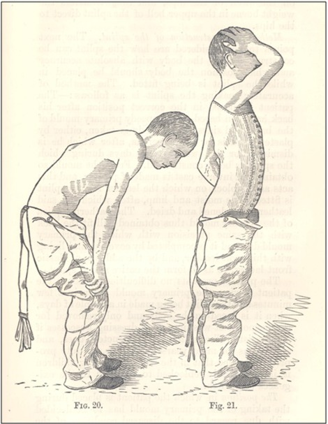
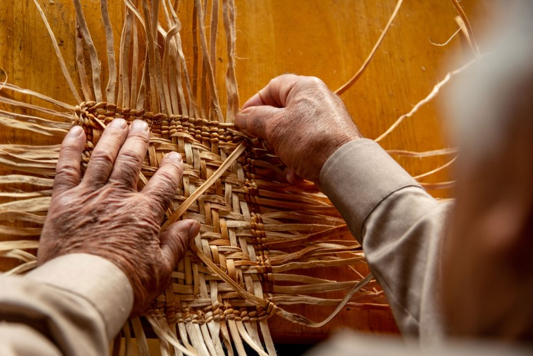

We are proud to announce this year’s postgraduate archaeology conference at The University of Exeter! We’ll be running from 10am until 2pm on the 12th of December in room 212 of the Laver Building on Streatham Campus.
About
“Building Bridges” is a series of interdisciplinary talks regarding interactions between humans, animals and the environment throughout history. The conference encompasses a wide variety of topics, based on the research interests of the Exeter postgraduate archaeology class of 2022/23.
The day is divided into three segments:
Presentations on Human-Animal interactions
Presentations on Human-Human interactions
Presentations on Human-Environment interactions
Sample Topics
Scoliosis, Spina Bifida, and Pott’s Disease in Victorian England: Analysing skeletal evidence of corset use to treat pathologies on the spine

Reconstructing Cultural Identity: Using Experimental Archaeology to reconnect people to their lost history
